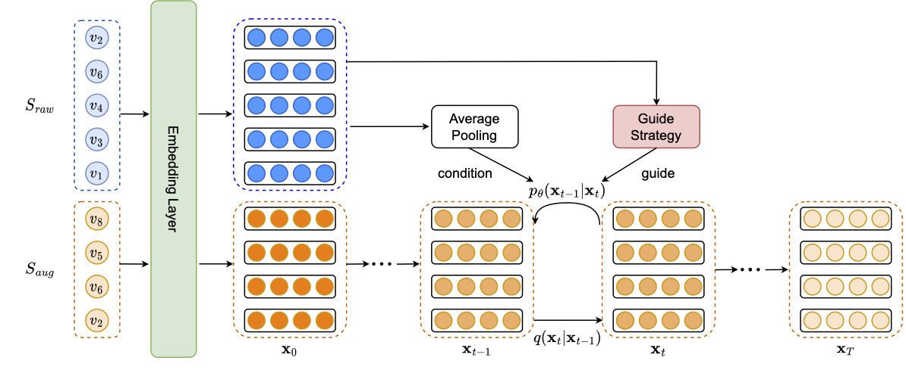
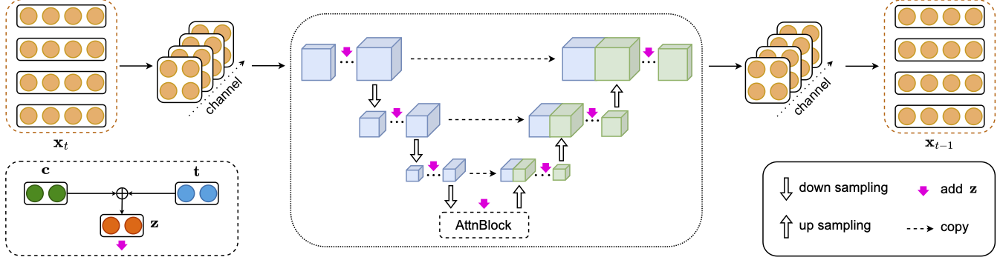
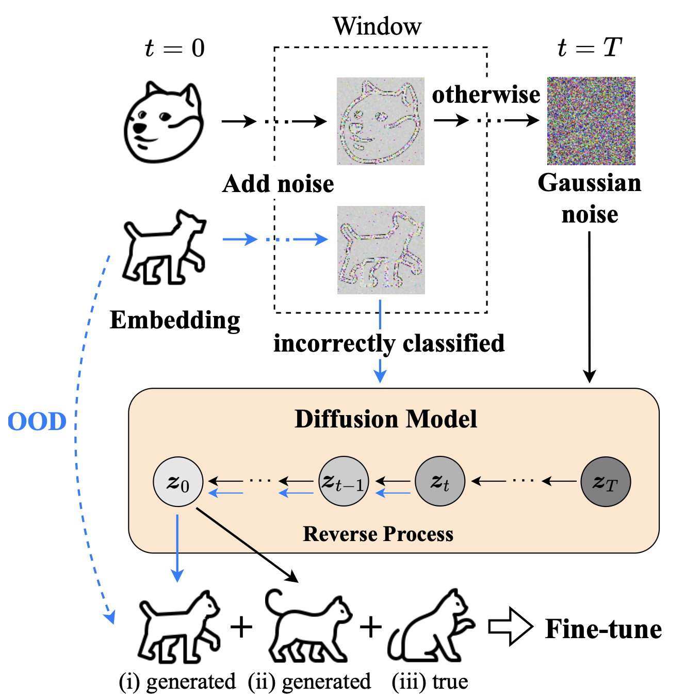

9.2. 基于扩散的数据增强¶
推荐系统面临的一个核心挑战是数据稀疏性。用户与物品的交互数据天然呈现长尾分布：少数热门物品积累了大量交互，而大多数物品的交互记录极为有限。对于新用户（冷启动问题）和低活跃用户，历史行为的匮乏使得准确建模其偏好变得困难。传统的数据增强方法（如随机裁剪、重排序）虽然能在一定程度上扩充训练数据，但生成的样本质量有限，难以真正捕捉用户的潜在兴趣模式。
扩散模型的生成能力为这一问题提供了新的解决思路。通过学习数据的分布，扩散模型可以生成高质量的伪交互序列，有效扩充训练数据。本节将介绍两种代表性方法：DiffuASR (Liu et al., 2023) 通过生成用户历史序列的“前序”来实现序列增强；Diff-MSR (Wang et al., 2024) 利用跨场景知识迁移解决冷启动问题。
9.2.1. 序列增强：DiffuASR¶
序列推荐（Sequential Recommendation）通过建模用户的历史交互序列来预测下一个可能感兴趣的物品 (Kang and McAuley, 2018)。然而，序列推荐面临两个核心挑战：数据稀疏性——大量用户和物品之间只有极少的交互记录；以及长尾用户问题——大多数用户的历史交互序列很短（往往少于10条），而现有模型对这些用户的推荐效果显著下降。数据增强是缓解这些问题的直接手段。
DiffuASR (Liu et al., 2023) 提出了一种基于扩散模型的序列增强框架。其核心思想是：给定用户的原始交互序列 \(S_{\text{raw}}\)，生成一段与之对应的“前序”序列 \(S_{\text{aug}}\)，即用户在 \(S_{\text{raw}}\) 之前可能产生的交互。将 \(S_{\text{aug}}\) 与 \(S_{\text{raw}}\) 拼接后，可以得到更长、更完整的用户历史，用于训练下游的序列推荐模型。
9.2.1.1. 整体框架¶
DiffuASR的框架包含三个关键组件：
1. 前向过程（Forward Process）：将目标增强序列的物品嵌入逐步加噪。与图像扩散不同，这里的“数据”是一个嵌入矩阵 \(\mathbf{x}_0 = [\mathbf{e}_{-M}, \mathbf{e}_{-M+1}, \ldots, \mathbf{e}_{-1}] \in \mathbb{R}^{M \times d}\)，其中 \(M\) 是增强序列的长度，\(d\) 是嵌入维度。
2. 反向过程（Reverse Process）：从噪声中恢复嵌入序列 \(\hat{\mathbf{x}}_0\)，并通过舍入（Rounding）操作将连续嵌入映射回离散物品ID：
其中 \(\text{sim}(\cdot, \cdot)\) 表示余弦相似度，\(\mathcal{V}\) 是物品词表。这一步骤将生成的连续嵌入转化为可解释的物品序列。
3. 引导过程（Guide Procedure）：确保生成的序列与原始序列 \(S_{\text{raw}}\) 在语义上一致。引导信息来自原始序列的聚合表示 \(\mathbf{c} = \text{Avg}(\mathbf{e}_1, \mathbf{e}_2, \ldots, \mathbf{e}_{n_u})\)。
{kind=link}

图9.2.1 DiffuASR的整体框架图。 输入的原始序列 \(S_{\text{raw}}\)，前向加噪过程，反向去噪过程（包含SU-Net和Guide Procedure），以及输出的增强序列 \(S_{\text{aug}}\)。最终将 \(S_{\text{aug}}\) 与 \(S_{\text{raw}}\) 拼接形成完整的训练序列。¶
9.2.1.2. Sequential U-Net¶
标准的U-Net架构是为图像设计的，直接应用于序列嵌入会丢失序列维度的信息。DiffuASR提出了Sequential U-Net（SU-Net）来处理这一问题。
SU-Net的关键设计在于如何处理输入的嵌入序列。具体做法是：
将序列维度作为通道：将 \(\mathbf{x}_t \in \mathbb{R}^{M \times d}\) 视为 \(M\) 个通道的“图像”
重塑嵌入维度：将每个 \(d\) 维嵌入重塑为 \(\sqrt{d} \times \sqrt{d}\) 的矩阵形式
这样，输入变成了一个 \(M\) 通道、\(\sqrt{d} \times \sqrt{d}\) 大小的张量，可以自然地应用卷积操作。由于卷积网络独立处理各通道，序列中各位置的信息得以保留。
SU-Net的主体结构与U-Net类似，包含下采样、中间注意力层和上采样三个阶段。时间步 \(t\) 和条件向量 \(\mathbf{c}\) 通过加性融合注入到各ResNet块中：
其中 \(\mathbf{t}\) 是时间步 \(t\) 的正弦位置编码。\(\mathbf{z}\) 经过线性变换后与各层的输入相加，从而控制去噪过程的方向。
{kind=link}

图9.2.2 SU-Net的架构图。 将输入的嵌入序列重塑为多通道矩阵，经过下采样、AttnBlock、上采样后恢复原始形状。¶
9.2.1.3. 引导策略¶
DiffuASR提供了两种引导策略，对应上一节介绍的两种条件生成方法：
1. Classifier-Guided Strategy
使用一个预训练的序列推荐模型作为“分类器”。由于增强序列 \(S_{\text{aug}}\) 是原始序列的前序，\(S_{\text{raw}}\) 的第一个物品 \(v_1\) 可以视为 \(S_{\text{aug}}\) 的“下一个物品”。因此，引导目标是让生成的序列能够正确预测 \(v_1\)：
其中 \(\phi\) 是预训练序列推荐模型的参数。
2. Classifier-Free Strategy
无需预训练分类器，直接在训练时随机丢弃条件向量：
其中 \(\mathbf{e}_{\text{padding}}\) 是占位向量。这种方式更加简洁高效，在实际应用中更为常用。
9.2.1.4. 训练与增强流程¶
训练阶段：从原有数据集中选择长度大于 \(M\) 的序列，将前 \(M\) 个物品作为增强目标，其余作为 \(S_{\text{raw}}\)。这样可以利用真实的前序数据来监督扩散模型的学习。
增强阶段：对于每个用户序列，执行引导的反向去噪过程，生成前序 \(\hat{S}_{\text{aug}}\)，并与原序列拼接形成增强后的训练数据 \(\mathcal{D}_A\)。
与其他序列增强方法相比，DiffuASR生成的序列可以直接用于训练任何序列推荐模型，无需修改模型架构，具有很强的通用性。
9.2.2. 跨场景增强：Diff-MSR¶
在多场景推荐（Multi-Scenario Recommendation, MSR）中，不同场景的数据量差异悬殊。热门场景积累了海量交互数据，而新兴或垂直场景（冷启动场景）的数据则十分稀疏。这导致两个问题：（1）冷启动场景的模型参数难以充分学习；（2）联合训练时，冷启动场景容易受到热门场景的负迁移影响。
Diff-MSR (Wang et al., 2024) 提出了一种利用扩散模型进行跨场景数据增强的方法。其核心洞察来自计算机视觉：一张模糊的狗的图片可能看起来像猫。类似地，在推荐的嵌入空间中，来自数据丰富场景的用户-物品嵌入经过适当加噪后，其“轮廓信息”可能与冷启动场景的样本相似。Diff-MSR利用这一特性，从丰富场景“借用”知识来增强冷启动场景。
9.2.2.1. 整体框架¶
Diff-MSR包含四个阶段：
1. 预训练阶段：使用所有场景的数据训练一个多场景推荐骨干模型（如MMoE），得到共享的嵌入层。这一步获取跨场景通用的特征表示。
2. 扩散阶段：针对每个冷启动场景，分别训练两个扩散模型——一个用于正样本（点击），一个用于负样本（未点击）。输入是用户特征和物品属性的嵌入拼接 \(\mathbf{e} = [\mathbf{e}_1 \| \mathbf{e}_2 \| \cdots \| \mathbf{e}_M]\)。这些扩散模型学习冷启动场景的数据分布。
3. 分类阶段：训练一个二分类器，判断给定的（加噪）嵌入是来自冷启动场景还是数据丰富场景。关键操作是：对数据丰富场景的样本进行不同程度的加噪，然后用分类器判断。如果某个加噪样本被误判为冷启动场景，说明它的“轮廓”与冷启动场景相似，可以被利用。
4. 微调阶段：使用三类数据微调冷启动场景的模型参数：
从误分类的丰富场景加噪样本出发，用冷启动场景的扩散模型去噪得到的伪样本
从纯高斯噪声出发生成的伪样本
冷启动场景的真实数据
{kind=link}

图9.2.3 Diff-MSR的知识迁移示意图。来自数据丰富场景（狗）的嵌入经过加噪后，若被分类器误判为冷启动场景（猫），则可用冷启动场景的扩散模型去噪，生成高质量的增强样本。¶
上述流程中，分类阶段是连接两个场景的关键。具体而言，Diff-MSR对丰富场景的嵌入 \(\mathbf{z}_0\) 进行不同程度的加噪得到 \(\mathbf{z}_t\)，然后用分类器判断其来源。如果 \(\mathbf{z}_t\) 被误判为冷启动场景，说明这个“模糊”的丰富场景样本在嵌入空间中与冷启动场景相似——就像一张模糊的狗的照片可能看起来像猫一样。这时，用冷启动场景的扩散模型对 \(\mathbf{z}_t\) 进行去噪，就能生成一个高质量的冷启动场景样本。
为了让分类器能有效判断加噪样本的“轮廓”，Diff-MSR设计了分段噪声策略：在前几步保持 \(\beta_t\) 为较小常数以保留嵌入的结构信息，之后再线性增长。这样，轻度加噪的样本仍保留足够的场景特征供分类器判断，而重度加噪则确保最终收敛到标准高斯噪声。
本节介绍的两种方法展示了扩散模型作为数据增强工具的应用潜力。DiffuASR通过生成前序序列扩充用户历史，Diff-MSR则利用跨场景的嵌入迁移缓解冷启动问题。两者的共同点在于利用扩散模型的生成能力产生高质量的伪交互数据，同时通过条件控制确保生成数据的语义一致性。在下一节中，我们将介绍扩散模型在特征增强和推荐多样性方面的应用。